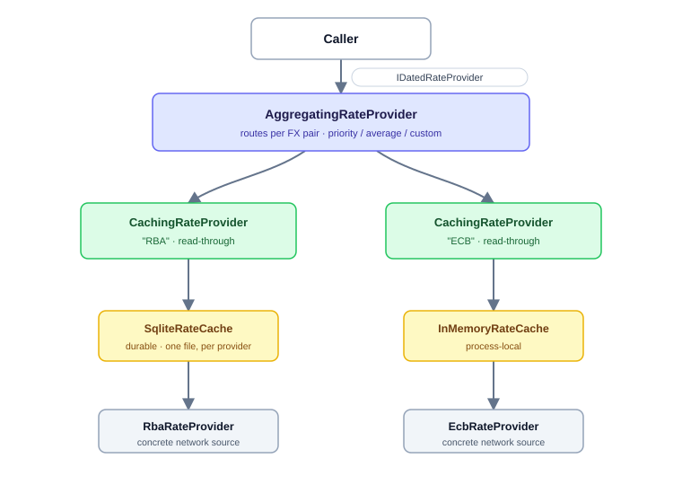

Namespace Bodu.Financial.ExchangeRates.Caching

Bodu.Financial.ExchangeRates.Caching
Purpose
Bodu.Financial.ExchangeRates.Caching is the caching and composition layer for the Bodu.Financial exchange-rate provider stack. Rather than building caching or grouping into each provider, it ships two orthogonal pieces that each implement the same IDatedRateProvider contract (and the timeless IRateProvider), so they drop in anywhere a provider is expected:
- A read-through cache, one cache per provider. CachingRateProvider wraps exactly one inner source over one single-provider cache. It serves fresh cached rates and delegates to the source only on a miss, then caches what the source returns.
- An aggregator that groups many providers. AggregatingRateProvider groups named children behind one entry point, combining them through a pluggable strategy with optional per-currency-pair routing.

The cache owns expiry: each provider has its own caching duration with a global default, the cache returns only fresh rows, and it prunes stale rows on write. Both single-date lookups and range lookups (GetRatesAsync) flow through the cache.
Alongside the in-memory, TOML-file, and JSON-file caches, two persistent backends now live in this same namespace: SqliteRateCache (a SQLite database) and DistributedRateCache (any Microsoft.Extensions.Caching.Distributed.IDistributedCache, including Redis). Both are behaviourally identical to the built-in caches — the same freshness, merge, coverage, and validation semantics, taken from the shared public RateCacheRules — so each drops in anywhere an IRateCache is expected, behind a CachingRateProvider. Each cache stays bound to one provider, but several single-provider SQLite caches may share one database file — the leading provider key column keeps their series partitioned — and caching providers can be stacked (a fast in-memory tier over a durable SQLite one); see the guide.
All dependency-injection registration lives in the Bodu.Financial.ExchangeRates namespace, so a single using Bodu.Financial.ExchangeRates; makes AddCachedRateProvider, AddAggregatedRateProvider, AddSqliteRateCache, AddDistributedRateCache, and AddRedisRateCache available. The SQLite and distributed backends ship their registration inside their own runtime packages; there are no separate *.DependencyInjection packages.
Static documentation
- Caching and aggregating exchange rates guide — the cache cascade, one-cache-per-provider read-through, the aggregator's strategies and per-pair routing, the on-disk TOML and JSON formats, file layouts and date partitioning, custom storage, and dependency injection.
Key types
Storage (a cache is bound to one provider)
- IRateCache — the single-provider cache contract: a bound
Provider, andGetRates/Storekeyed by currency pair. - RateCacheBase<TOptions> — the storage-agnostic core behind the in-box caches: read-time freshness filtering and write-time merge-and-prune, prescribing no physical layout. Its storage seam is
internal, so it is not a public subclassing point — to back the cache with a store of your own, implementIRateCachedirectly and delegate the freshness, merge, and coverage rules to RateCacheRules, as the SQLite and distributed backends do. - IFileRateCache, FileRateCacheBase<TOptions> — the file-storage seam and the plumbing behind the TOML and JSON leaves: layout-driven directory and file-name resolution, optional date partitioning, and best-effort IO. The base exposes
ResolveFilePath,ResolveDirectory, andResolvePartitionPath, but its serialization seam is likewise not public — a new file format is anotherIRateCacheimplementation. - RateCacheRules — the shared, public freshness, validity, merge, and coverage rules every backend applies, so a custom
IRateCachestays behaviourally identical to the in-box caches. - TomlFileRateCache — the sealed TOML leaf (
<directory>/<provider>/<from><to>.tomlby default; decimals quoted for lossless round-trips; a self-describingProvider/From/Toheader). - JsonFileRateCache — the sealed JSON leaf (
<directory>/<provider>/<from><to>.jsonby default; decimals as JSON numbers; the same self-describing header). Both file leaves honour the configured layout, including date partitioning. - RateCacheFileLayout — describes where a pair's rows are stored: the folder hierarchy, the file name, and (through its partition strategy) whether the rows split across files by date. Built-ins
SingleFile(default),Yearly,Monthly,Daily, plusCreate(strategy, directoryFunc?, fileNameFunc?)for custom folder and file-name rules. - RateCachePartitionStrategy — decides how a pair's rows split across files by date:
Single,Yearly,Monthly,Daily, orCustom(keySelector, rangeSelector)for arbitrary periods. - RateCacheDirectoryContext, RateCacheFileContext — the inputs passed to a custom layout's directory and file-name delegates.
- InMemoryRateCache — an in-memory cache reusing the same expiry mechanism; nothing is persisted.
- SqliteRateCache, SqliteRateCacheOptions — a persistent SQLite-backed cache (one provider's rates and coverage windows in a SQLite database) and its options (bound
Provider,DatabaseFilePath). Registered withAddSqliteRateCache. - DistributedRateCache, DistributedRateCacheOptions — a shared cache over any
IDistributedCache(Redis-capable), so several application instances share one warm cache, and its options (boundProvider, key-prefix settings). Registered withAddDistributedRateCacheor the Redis convenienceAddRedisRateCache. - NullRateCache — the no-op cache (
NullRateCache.Create(provider)), for when caching is disabled. - RateCacheOptions, FileRateCacheOptions — the storage-agnostic options (bound
Provider) and the file options (addsCacheDirectoryand theLayout). - CachedRate — one cached row: observation
Date,Rate, and theCachedAtUtcinstant that drives expiry. - RateCacheEntry — the serializable on-disk row model: observation
Date,Rate,CachedAtUtc, and optionalObservedAtUtc. - RateCacheCoverageEntry — a persisted coverage window: the inclusive
Start/Enddates fetched and theFetchedAtUtcinstant they were retrieved. - RateCacheFile — the file document the file backends serialize: a self-describing
Provider/From/Toheader plus anEntrieslist of rows and aCoveragelist of fetched windows. - RateCacheWriteStatus — the outcome of a cache write (
Stored,Skipped,Failed).
Read-through caching decorator
- CachingRateProvider — wraps one inner source over one cache; implements both the dated and timeless surfaces.
- CachingRateProviderBase — the abstract base holding the read-through, staleness, and range logic; derived types supply the wrapped inner provider.
- CachingRateOptions — cache location (
CacheDirectory),DefaultExpiry, the per-providerProviderExpiryoverrides, the per-event log levels, andDefaultLookupOptionsfor the timeless surface. - RateCacheWarmupOptions, RateCacheWarmupExtensions — the startup warm-up: the pairs (
"XXX/YYY"),LookbackDaysor explicitStartDate/EndDatewindow, and optional provider filter, registered on theIFinancialServiceBuilderwithAddRateCacheWarmup(...)(default configuration sectionFinancial:RateCacheWarmup) as a hosted service that pre-fetches through every registered caching provider.
Aggregation (group many providers)
- AggregatingRateProvider — groups named children, applies a strategy and per-pair routing, and exposes
TryGetProviderfor direct access to a named child. - IRateAggregationStrategy — the strategy seam; implement it for weighted, median, or first-non-stale combination.
- PriorityFallbackStrategy — first child that resolves wins (the default; successor to the former composite provider).
- AverageStrategy — arithmetic mean of every child that resolves, tagged with a synthetic provider label.
- CurrencyPairRoute, RateAggregationOptions — a per-pair ordered child list (with an optional pair-specific strategy) and the aggregator options that hold the default strategy, default order, and the route map.
- NamedDatedRateProvider — pairs a child provider with the name it is referenced by in routing and diagnostics.
- IAggregatedRateBuilder — the fluent builder surface for composing an aggregator in DI:
AddCachedChild(by provider type or factory),UseDefaultStrategy, andMapPairfor per-pair provider ordering and optional pair-specific strategies.
Minimal sample
using Bodu.Financial;
using Bodu.Financial.ExchangeRates.Caching;
var options = new CachingRateOptions
{
CacheDirectory = "/var/cache/fx",
DefaultExpiry = TimeSpan.FromHours(12),
};
options.ProviderExpiry["RBA"] = TimeSpan.FromDays(7);
// One cache per provider — the provider is storage-agnostic, so you pick the cache.
var rbaCached = new CachingRateProvider(
rba, new TomlFileRateCache(new FileRateCacheOptions { Provider = "RBA", CacheDirectory = "/var/cache/fx" }), options);
var ecbCached = new CachingRateProvider(
ecb, new TomlFileRateCache(new FileRateCacheOptions { Provider = "ECB", CacheDirectory = "/var/cache/fx" }), options);
// Group them with per-FX-pair routing.
var aggregation = new RateAggregationOptions();
aggregation.Routes[new CurrencyPair(CurrencyCode.AUD, CurrencyCode.USD)] = new CurrencyPairRoute(new[] { "RBA", "ECB" });
aggregation.Routes[new CurrencyPair(CurrencyCode.USD, CurrencyCode.GBP)] = new CurrencyPairRoute(new[] { "ECB", "RBA" });
IDatedRateProvider provider = new AggregatingRateProvider(
new[]
{
new NamedDatedRateProvider("RBA", rbaCached),
new NamedDatedRateProvider("ECB", ecbCached),
},
aggregation);
RateLookupResult today = provider.GetRate("AUD", "USD", new DateOnly(2024, 1, 3));
For dependency-injection wiring, add using Bodu.Financial.ExchangeRates; and call AddCachedRateProvider, AddAggregatedRateProvider, AddSqliteRateCache, AddDistributedRateCache, or AddRedisRateCache. See the caching guide for the full walkthrough.
Classes
AggregatingRateProvider
Groups several named IDatedRateProvider children behind a single entry point, combining them through a configurable IRateAggregationStrategy with optional per-currency-pair routing.
AverageStrategy
An IRateAggregationStrategy that returns the arithmetic mean of every candidate that can resolve the request, tagged with a synthetic provider label.
CachingRateOptions
Configures a CachingRateProvider: the on-disk cache location, the default time a cached rate stays fresh, and per-provider overrides of that default.
CachingRateProvider
A caching provider that wraps a single inner IDatedRateProvider over a single-provider IRateCache, serving fresh rates from the cache and delegating to the inner provider only on a miss.
CachingRateProviderBase
Provides the shared caching mechanism for a provider that wraps a single inner IDatedRateProvider over a single-provider IRateCache: it serves fresh rates from the cache and delegates to the inner provider only on a miss, caching what the inner provider returns. Derived types supply the wrapped inner provider.
CurrencyPairRoute
Describes how an AggregatingRateProvider resolves a specific currency pair: the ordered child provider names to consult and, optionally, the strategy to combine them.
DistributedRateCache
An IRateCache that persists a single provider's rates and fetch-coverage windows in an injected IDistributedCache — for example a Redis cache — expiring them through the same freshness mechanism as the in-memory, TOML, and SQLite caches.
DistributedRateCacheOptions
Configures a distributed-cache-backed IRateCache: the single provider inherited from RateCacheOptions together with an optional key prefix applied to every entry the cache writes to the backing IDistributedCache.
FileRateCacheBase<TOptions>
Provides the file-storage mechanism for an IRateCache: layout-driven directory and file-name resolution, optional date partitioning, and best-effort file read and write. Derived types supply only the serialization format.
FileRateCacheOptions
Configures a file-backed IRateCache: the single provider inherited from RateCacheOptions together with the directory its cache files are written under.
InMemoryRateCache
An IRateCache that stores a single provider's rates in memory for the lifetime of the instance, expiring them through the same freshness mechanism as the file caches.
JsonFileRateCache
An IRateCache that persists a provider's rates as JSON files, one file per currency pair (or, under a partitioned layout, per pair and calendar period).
NullRateCache
An IRateCache that stores nothing, used when on-disk caching is disabled.
PriorityFallbackStrategy
An IRateAggregationStrategy that returns the first successful result from the ordered candidates, giving deterministic, auditable fallback.
RateAggregationOptions
Configures an AggregatingRateProvider: the default combination strategy, the default child order, and per-currency-pair routing overrides.
RateCacheBase<TOptions>
Provides the storage-agnostic mechanism for an IRateCache: read-time freshness filtering, write-time merge-and-prune, and the recording and pruning of coverage windows for a single provider. Derived types implement only the persistence of a Bodu.Financial.ExchangeRates.Caching.CachePairState; this base prescribes no physical storage structure.
RateCacheCoverageEntry
The mutable serialization shape of one recorded coverage window, distinct from the internal Bodu.Financial.ExchangeRates.Caching.CoverageWindow value so the on-disk format can evolve independently of the in-memory contract.
RateCacheEntry
The mutable serialization shape of one cached rate row, distinct from the public CachedRate value so the on-disk format can evolve independently of the in-memory contract.
RateCacheFile
The root TOML table for a cache file, wrapping the array of cached rate rows together with the array of recorded coverage windows. TOML requires the document root to be a table, so each collection is nested under a named array-of-tables rather than serialized as a bare array.
RateCacheFileLayout
Describes where a file-backed exchange-rate cache stores a currency pair's rows: the folder that holds the pair's file or files, the name of each file, and — through its PartitionStrategy — whether the rows are split across files by date.
RateCacheOptions
Provides the storage-agnostic options shared by every IRateCache: the single provider a cache instance is bound to. Storage-specific option types derive from this base to add their own location settings.
RateCachePartitionStrategy
Decides how a pair's cached rows are split across files by date: a single file for the whole pair, or one file per calendar year, month, or day, or a caller-supplied scheme.
RateCacheRules
Provides the storage-agnostic freshness, validity, merge, and coverage rules shared by every IRateCache implementation, so the in-memory, file, SQLite, and distributed backends apply one authoritative policy and differ only in how they read and write their bytes.
RateCacheWarmupOptions
Configures the startup cache warm-up registered through AddRateCacheWarmup: the currency pairs to warm and
the date window they are warmed over.
SqliteRateCache
An IRateCache that persists a single provider's rates and fetch-coverage windows in a SQLite database, expiring them through the same freshness mechanism as the in-memory and TOML caches.
SqliteRateCacheOptions
Configures a SQLite-backed IRateCache: the provider inherited from RateCacheOptions together with the location of the SQLite database its rates and coverage windows are persisted in, and the connection-level concurrency settings applied on open.
TomlFileRateCache
An IRateCache that persists a provider's rates as TOML files, one file per currency pair (or, under a partitioned layout, per pair and calendar period).
Structs
CachedRate
Represents one cached exchange-rate observation: a dated rate together with the UTC instant it was cached, which drives expiry, and the optional UTC instant the upstream data backing it was originally fetched.
NamedDatedRateProvider
Pairs an IDatedRateProvider with the name it is referenced by inside an AggregatingRateProvider.
RateCacheDirectoryContext
Supplies the inputs a directory resolver needs to choose the folder that holds a currency pair's cache file or files: the configured cache root, the bound provider, and the currency pair.
RateCacheFileContext
Supplies the inputs a file-name resolver needs to name a single cache file: the bound provider, the currency pair, the partition key, and the format's file extension.
Interfaces
IAggregatedRateBuilder
Builds the set of named, individually cached children an AggregatingRateProvider groups, together with its default strategy and per-currency-pair routing.
IFileRateCache
Specializes IRateCache for caches that persist rates as files, exposing the storage directory and the file or directory a pair resolves to under the configured layout.
IRateAggregationStrategy
Decides how an AggregatingRateProvider combines the results of an ordered set of candidate providers into a single answer.
IRateCache
Persists fetched exchange rates for a single provider in a pair-keyed store so they need not be re-fetched while fresh.
Enums
RateCacheWriteStatus
Reports the outcome of an atomic StoreFetchedRange(CurrencyPair, IReadOnlyList<CachedRate>, DateOnly, DateOnly, TimeSpan, DateTimeOffset) write, distinguishing a durable success from a swallowed storage failure and from a deliberate no-op cache.